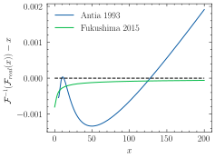

Note
Go to the end to download the full example code
Showcase the inversion of Fermi-Dirac-Ingerals
The following code displays the quality of the inversion of the Fermi-Dirac integral for the Functions presented in [Antia, 1993] and the improments published in [Fukushima, 2015].

import matplotlib.pyplot as plt
import numpy as onp
import jaxrts
plt.style.use("science")
xmin, xmax = 0, 200
x = onp.linspace(xmin, xmax, 400)
y = jaxrts.math.fermi_integral(x, 0.5)[:, 0]
plt.plot(
x[10:],
(jaxrts.math.inverse_fermi_12_rational_approximation_antia(y) - x)[10:],
label="Antia 1993",
)
plt.plot(
x,
jaxrts.math.inverse_fermi_12_fukushima_single_prec(y) - x,
label="Fukushima 2015",
)
plt.plot(x, onp.zeros_like(x), color="black", linestyle="dashed")
plt.xlabel(r"$x$")
plt.ylabel(r"$\mathcal{F}^{-1}(\mathcal{F}_{real}(x))-x$")
plt.legend()
plt.tight_layout()
plt.show()
Total running time of the script: (0 minutes 3.532 seconds)